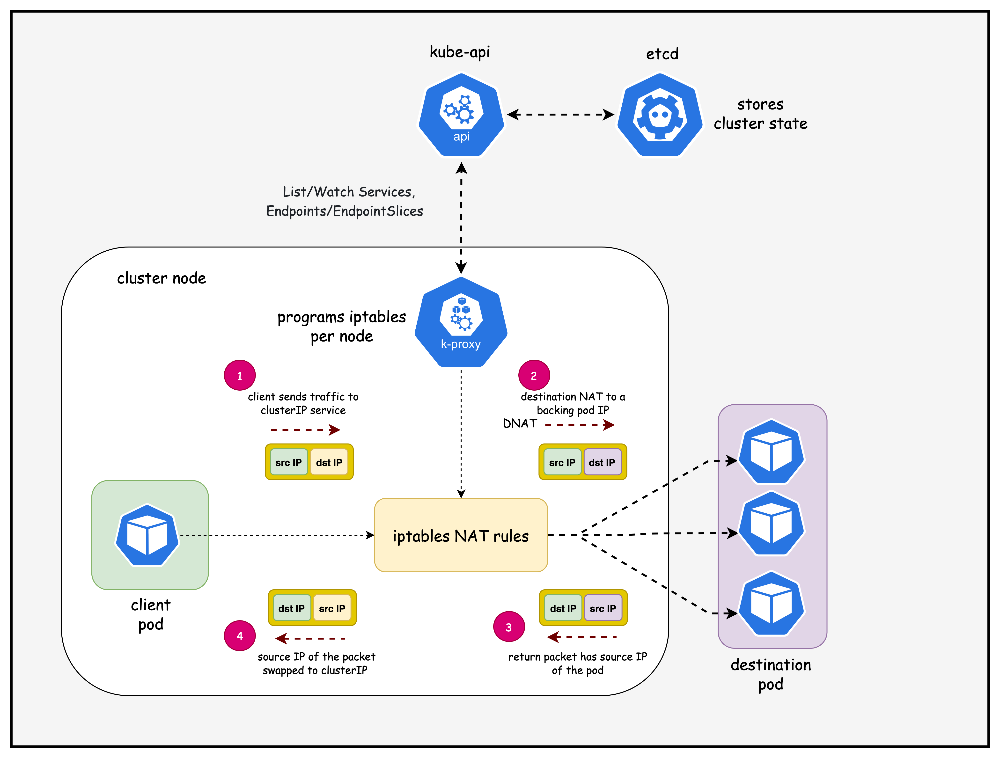
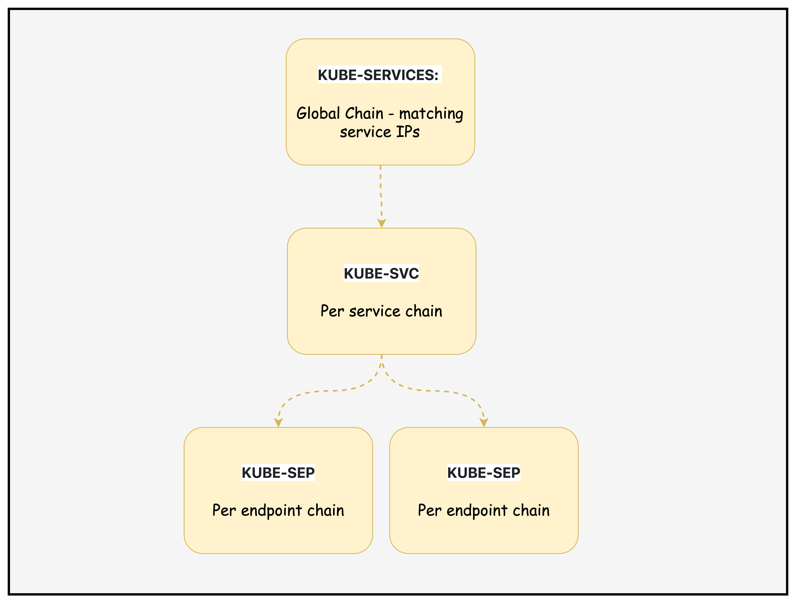
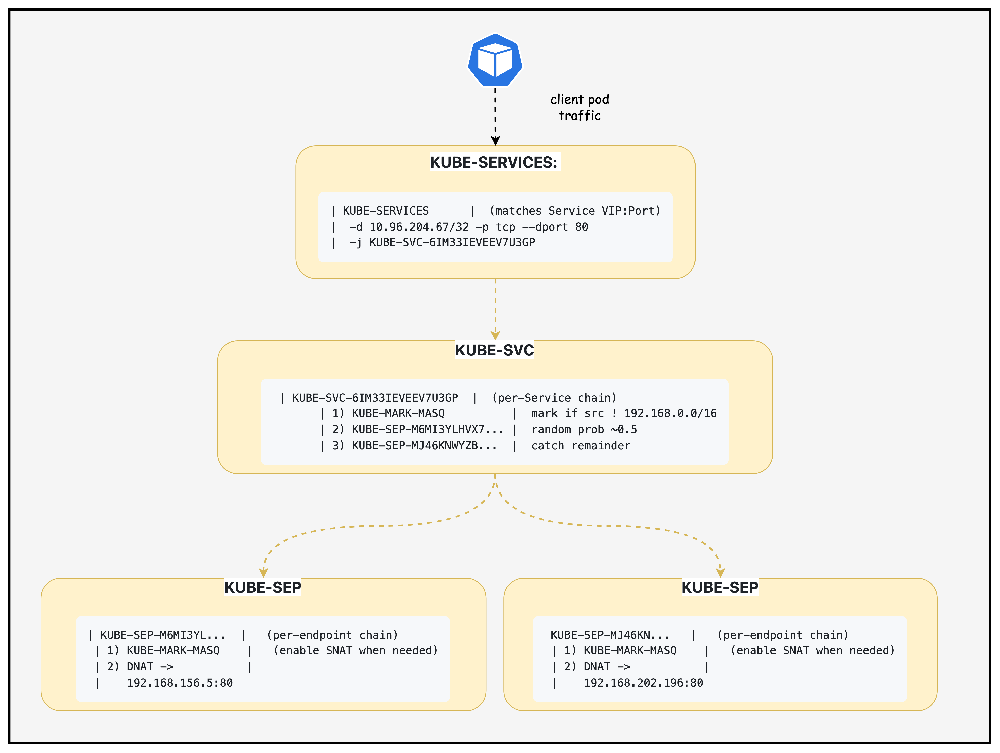

创建 Kind
containerlab deploy -t k8-services.clab.yaml
三节点，禁用默认 CNI。
Lesson 04 · kube-proxy · iptables
从稳定 VIP 出发，沿着 EndpointSlice、iptables 链与 Calico 路由走到真实 nginx Pod。
Service decouples clients from Pod lifecycle
Deployment 重建 Pod 后，客户端缓存的旧地址失效。
VIP 与 DNS 名保持稳定，控制面只更新后端 Endpoint 集合。
客户端依赖 Service，不依赖 Pod 生命周期。
连接被转到一个健康 Pod IP:Port。
DNS 名称解析到 ClusterIP，而非固定 Pod。
ClusterIP is the default
| 类型 | 入口 | 主要用途 | 本课范围 |
|---|---|---|---|
| ClusterIP | 集群内部 VIP | Pod 间稳定服务入口 | 深入分析 |
| NodePort | 每个 Node 的 30000-32767 | 从节点端口进入集群 | 边界说明 |
| LoadBalancer | 外部负载均衡器 IP | 云或 MetalLB 对外暴露 | 后续课程 |
| ExternalName | DNS CNAME | 把 Service 名称映射到外部域名 | 不做数据面代理 |
| Headless | clusterIP: None | DNS 直接返回 Pod IP | Lesson 11 |
关键区别：ClusterIP 有虚拟 IP 并由代理数据面转发；Headless 没有 VIP，客户端直接获得 Endpoint 地址。
Desired state and packet forwarding
Calico 默认数据面不会替代本课的 kube-proxy iptables。启用 Calico eBPF 后，Service 实现边界才会改变。
containerlab/04-k8s-services
| 对象 | 课程值 | 作用 |
|---|---|---|
| Kind 节点 | 3 | control-plane + 2 workers |
| Pod CIDR | 192.168.0.0/16 | Calico IPPool |
| Service CIDR | 10.96.0.0/16 | ClusterIP 分配范围 |
| Calico | 3.30.0 | Pod 网络与策略 |
| 封装 | VXLANCrossSubnet | 跨 Node 子网才封装 |
| kube-proxy | iptables 路径 | 本课逐链检查 |
# k8-services-no-cni.yaml networking: disableDefaultCNI: true podSubnet: "192.168.0.0/16" serviceSubnet: "10.96.0.0/16" # custom-resources.yaml ipPools: - blockSize: 26 cidr: 192.168.0.0/16 encapsulation: VXLANCrossSubnet natOutgoing: Enabled
Repository drift
页面显示 6 个 multitool Pod，并要求：
kubectl exec -it multitool-1-bgssq -- sh telnet nginx-service 80
当前仓库的 tools/ 只包含 nginx-deployment.yaml。
kubectl run svc-client \ --image=praqma/network-multitool:latest \ --restart=Never \ --command -- sleep infinity kubectl wait --for=condition=Ready pod/svc-client
后续把课程中的 multitool Pod 名替换为 svc-client。
先执行 kubectl get pods -o wide。已有 multitool 就沿用；没有就创建临时客户端。
tools/nginx-deployment.yaml
kind: Deployment metadata: name: nginx-deployment spec: replicas: 2 selector: matchLabels: { app: nginx } template: metadata: labels: { app: nginx } --- kind: Service metadata: name: nginx-service spec: selector: { app: nginx } ports: [{ port: 80, targetPort: 80 }] type: ClusterIP
两个 nginx Pod 可以被替换、漂移或滚动更新。
Service 使用 app=nginx 选择 Pod，控制器生成 EndpointSlice。
客户端访问 Service 80，DNAT 后仍到 Pod 80。
未显式指定 clusterIP，API Server 从 Service CIDR 分配。
deploy.sh
containerlab deploy -t k8-services.clab.yaml
三节点，禁用默认 CNI。
kubectl apply -f custom-resources.yaml
等待 TigeraStatus Available。
kubectl apply -f tools/nginx-deployment.yaml
Deployment、Service 与 EndpointSlice。
仓库真实目录为 containerlab/04-k8s-services，页面示例少了 04-。
Node Ready、Calico Available、nginx Pod Ready 后再分析 Endpoint 与 iptables。
kubectl get pods,svc,endpointslice
192.168.156.5:80192.168.202.196:80192.168.156.5:80192.168.202.196:80addressType: IPv4一致性检查：EndpointSlice 中的地址应与两个 Ready nginx Pod 的 IP 完全一致。
VIP exists in rules, not as a Pod interface
ip addr show找不到 10.96.204.67iptables 模式通常不会把每个 ClusterIP 配到普通网卡。
iptables -t nat匹配 10.96.204.67:80Netfilter hook 截获连接并执行 DNAT。
Service 对象存在期间 VIP 保持不变。
每台节点都有针对 Service 的数据面规则。
EndpointSlice 更新后，kube-proxy同步规则。
nginx-service.default.svc.cluster.local
解析成功不能单独证明 kube-proxy 和 Endpoint 转发正常。
连接建立说明 VIP 匹配、Endpoint 选择和 Pod 路由都已工作。
Pod to Service connectivity
$ kubectl exec -it svc-client -- sh
$ telnet nginx-service 80
Connected to nginx-service
get
HTTP/1.1 400 Bad Request
Server: nginx/1.28.0小写且不完整的 get 不是合法 HTTP 请求，因此 400 符合预期。
$ printf 'GET / HTTP/1.0\r\nHost: nginx-service\r\n\r\n' \
| nc nginx-service 80
HTTP/1.1 200 OK
Server: nginx两种结果都证明连接到达 nginx；200 更适合正式演示。
API event to dataplane
提交 Service 与 Deployment
保存期望状态
选择 Ready nginx Pod
每台节点收到增量更新
创建或更新链和规则
DaemonSet-style node agent
10.96.204.67:8010.96.204.67:8010.96.204.67:80客户端在任意节点访问 VIP，先命中本节点规则；选中远端 Endpoint 后，Calico 再完成跨节点 Pod 路由。
Kube-proxy ClusterIP Service Flow

课程仓库：images/kube-proxy.png
KUBE-SERVICES · KUBE-SVC · KUBE-SEP
链名中的哈希会随 Service、端口和集群状态变化。现场必须从上一级规则动态发现下一条链。
Locate Service Rule
$ iptables -t nat -S KUBE-SERVICES | grep nginx-service -A KUBE-SERVICES -d 10.96.204.67/32 -p tcp --dport 80 -m comment --comment "default/nginx-service:http cluster IP" -j KUBE-SVC-6IM33IEVEEV7U3GP
Inspect Service Chain
Chain KUBE-SVC-6IM33IEVEEV7U3GP 1 KUBE-MARK-MASQ tcp !192.168.0.0/16 10.96.204.67 tcp dpt:80 2 KUBE-SEP-M6MI3YLHVX7DA53R all 0.0.0.0/0 0.0.0.0/0 statistic mode random probability 0.50000000000 /* nginx-service:http -> 192.168.156.5:80 */ 3 KUBE-SEP-MJ46KNWYZBDUIDMY all 0.0.0.0/0 0.0.0.0/0 /* nginx-service:http -> 192.168.202.196:80 */
客户端来自 Pod CIDR 外时打 MASQ mark。
约 50% 新连接进入 Endpoint A。
未命中前一概率分支的连接进入 Endpoint B。
Connection tracking
新 TCP 连接的首包经过统计规则并创建 conntrack/NAT 状态。
同一连接后续包沿已建立映射，不会在两个 nginx Pod 之间跳动。
Examine Endpoint DNAT #1
$ iptables -t nat -L KUBE-SEP-M6MI3YLHVX7DA53R -n -v 1 KUBE-MARK-MASQ all source 192.168.156.5 2 DNAT tcp tcp to:192.168.156.5:80
src 192.168.202.194
dst 10.96.204.67:80src 192.168.202.194
dst 192.168.156.5:80DNAT 只改目的地址和端口。集群内 Pod 客户端的源地址保持不变。
Examine Endpoint DNAT #2
$ iptables -t nat -L KUBE-SEP-MJ46KNWYZBDUIDMY -n -v 1 KUBE-MARK-MASQ all source 192.168.202.196 2 DNAT tcp tcp to:192.168.202.196:80
src 192.168.202.194
dst 10.96.204.67:80src 192.168.202.194
dst 192.168.202.196:80两个 KUBE-SEP 链的结构相同，差别只在目标 Pod IP:Port。
Chains and Flow

课程仓库：images/kube-proxy-chains.png
Rule details

课程仓库：images/kube-proxy-chains2.png
Local backend
DNAT 后目标 Pod 在本机，Linux FIB 直接命中本地 /32。
后端看到 192.168.202.194，conntrack 负责返回方向的反向 NAT。
Remote backend and Calico routing
DNAT 完成后，数据包已经只包含真实 Pod 目标地址。
远端 block 路由把包送到 worker2，再由本地 /32 交付。
KUBE-MARK-MASQ boundary
src 192.168.202.194 dst 10.96.204.67:80 DNAT src 192.168.202.194 dst 192.168.156.5:80
源地址保持不变，NetworkPolicy 和应用日志仍能识别客户端 Pod。
!192.168.0.0/16 jump KUBE-MARK-MASQ POSTROUTING MASQUERADE when marked
特定拓扑需要 SNAT 以保证回复回到代理节点并完成反向 NAT。
kube-proxy does not probe application health
EndpointSlice 增加地址，节点规则随后加入新分支。
控制面移除或标记不可用，kube-proxy 不再给新连接选择它。
不主动发送 HTTP 健康检查，它消费控制面状态。
Additional notes
同一客户端 IP 在超时时间内倾向固定到同一个后端。它改变选择行为，不改变 VIP 与 Endpoint 模型。
spec:
sessionAffinity: ClientIP
sessionAffinityConfig:
clientIP:
timeoutSeconds: 10800双栈集群可以为 Service 分配两种地址族，kube-proxy 为每个 family 编程规则，EndpointSlice 也按 addressType 区分。
spec: ipFamilyPolicy: PreferDualStack ipFamilies: - IPv4 - IPv6
Implementation boundaries
| 模式 | Service 实现 | 选择后端 | 本课命令是否适用 |
|---|---|---|---|
| kube-proxy iptables | NAT 链与规则 | 统计规则 + conntrack | 完全适用 |
| kube-proxy IPVS | 内核 virtual server | IPVS scheduler | 应使用 ipvsadm |
| kube-proxy nftables | nftables ruleset | nft data plane | 链名与命令不同 |
| Calico eBPF | BPF program + maps | Calico kube-proxy replacement | iptables 链可能不存在 |
kubectl -n kube-system get cm kube-proxy -o yaml
访问行为相似，不代表底层对象和排查命令相同。
从对象到连接，再到规则链
kubectl get pod,svc,endpointslice -o wide先锁定动态值。
nslookup nginx-service验证名称到 VIP。
nc -vz nginx-service 80验证 TCP 到 Service。
iptables -t nat -S KUBE-SERVICES发现实际 KUBE-SVC 链名。
iptables -t nat -L <KUBE-SVC-chain> -n -v复制真实链名，看概率与计数器。
| DNS 不通 | 查 CoreDNS、resolv.conf、kube-dns Service |
| VIP 不通 | 查 kube-proxy 模式与 KUBE-SERVICES |
| Service 无 Endpoint | 查 selector、Pod label、readiness |
| 只有远端 Endpoint 失败 | 查 Calico 跨节点 Pod 路由 |
| 负载不均 | 区分长连接、ClientIP affinity 与样本量 |
演示结束：运行 ./destroy.sh 并输入 yes，清理本实验 topology、Kind cluster 与 kubeconfig。
Summary and sources
Service selector 与 readiness 形成 EndpointSlice，kube-proxy watch 变化。
KUBE-SERVICES 匹配 VIP，KUBE-SVC 选后端，KUBE-SEP 执行 DNAT。
DNAT 后按真实 Pod IP 转发，Calico 负责本地或跨节点可达。